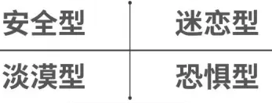

第五版
第五版

知乎，一款普遍安装在大学生手机的问答社交平台软件。但在这款软件上，超过百分之四十的问题都是有关于情感问题，例如：“女朋友老不回我消息怎么办？”“男朋友一周只找我两三次，是不爱我了吗？”“分手后，怎么挽回前任呢？”等等。这些问题似乎都在抱怨着：明明甜甜的恋爱，可是怎么一到我嘴里就变了味儿了呢？周国平在《爱与孤独》中有这样一句话：“生命纯属偶然，所以每个生命都要依恋另一个生命，相依为命，结伴而行。”可以说，每一段爱情都是两个人格相互的依恋。因此，不同的人格，就会有不同的依恋方式；不同的依恋方式，就会衍生出不同的爱情。
“依恋”这个词的理论概念，最早是由约翰·鲍尔比先提出。他将“依恋”定义为“个体与具有特殊意义的他人形成的牢固的情感纽带的倾向，能为个体提供安全和安慰”，用来解释婴儿与其养护者之间的情感联系。而后，又由美国著名的心理学家玛丽·艾斯沃斯进一步发展，并认为依恋关系中个体间的重要差异在于依恋的安全性或不安全性。并把婴儿对母亲的依恋关系分为四类。分别是：安全型、回避型、痴迷型（焦虑型）及恐惧型。而后由辛迪·哈赞和菲利普·谢弗将其拓展应用到成人恋爱领域中。
根据焦虑程度和回避程度，我们大致可以通过排列组合的方法来推测自己的依恋程度。当然，如果想要更加确切、详细的知道自己的依恋人格，可以点击文末的图片来进行测试。
安全型依恋人格是大部分人所属的人格。这种人格在婴儿时期获得的物质和精神关爱较为充足，给他们日后的恋爱筑起了牢固的心理基础，使得这类人更容易相信自己的伴侣，同时也会从一段关系中主动获得安全感。他们也更愿意表达自己内心的想法，同时也愿意倾听，愿意接纳对方。对于恋人间做出的亲密举动如拥抱、亲吻等也不会抗拒。安全型人格是比较理想的伴侣人选。
痴迷型人格（焦虑型）的主要特征表现患得患失，缺乏安全感。痴迷型人格的人在开始一段恋情时候，会快速和另一半进入状态，但是缺点就是他们总是会对伴侣产生怀疑，脑海里总会冒出一个想法：他最近对我冷漠了，他是不是不爱我了？他是不是爱上别人了 ？这种人格的伴侣往往会带给人比较强的压迫感，以爱的名义行着侵犯伴侣内心安全地带的事。但是，轻微的痴迷型，则对于一段健康的是没有影响的，相反可能会更加拉近两人之间的距离。
回避型人格则是因为婴儿时期，父母没有给予他们及时的回应和关爱，导致他们把自己的真实想法关在心里，人格偏向冷漠。回避型人格的人性格独立，有正确的自我认知，不依赖他人，拒绝和他人靠近，讨厌亲密关系。和回避型人格的人谈恋爱，你会感觉有他没他一个样，他们在一段感情之中表现出的行为和态度，是很平淡的，甚至是冷漠。回避型人格不是不需要被爱，相反他们内心非常渴望被关心和疼爱，只是被掩藏了起来，他们常常告诉自己：不行，我不能在这段关系中陷得太深，我不需要别人爱我，我只要自己爱自己就可以了。这就导致回避型人格本身的伴侣总是被折磨的一度怀疑自己、怀疑感情，其实只需要给他们一点空间，不要靠的太近，一步步地引导他们，是可以看到住在他们内心的那个可爱的本我的。
最后一种是恐惧型人格，又称矛盾型。他们最鲜明的人格表现就是：我很喜欢你，但当我发现你也喜欢我的时候，我就不喜欢你了。他们恋爱的心路历程往往十分矛盾，一面渴望亲近，一面又十分排斥。这样子类型的依恋人格，是需要进行很大的心理干预进行治疗的。不过，属于这种人格的同学也不必紧张，试着去克服内心的恐惧，发现恋爱中的美好，也是可以拥有甜甜的恋爱的。
当然，心理测试的目的并不是为了让大家给自己贴上一个标签，我们内心里的自己并不是简简单单的一个类型，每个人都有每个人各自的形状，只有知道了自己是什么形状，才能找到另一块适配的形状。同时，也不要对心理测试产生怀疑、不屑的看法，每次不同的心理测试会让你看到不同的自己，让你更了解自己以及那个你爱的人。